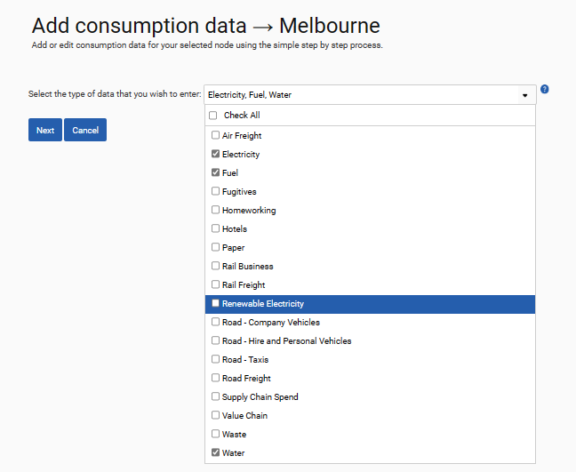
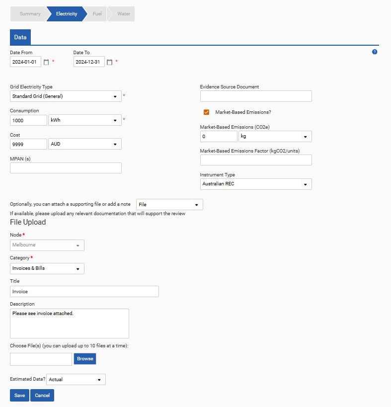

Input forms can be useful when you need to add a small amount of data.
Step 1: Getting Started
To add data to a single data source select the Input Form button on the row of the associated data source. Alternatively, select the Input Form button associated with a node to add data to multiple data sources from that node. After doing so, please select the type(s) of data you wish to upload to this node. You can select multiple data types to upload for a single node. Click next to proceed.

Step 2: Add Consumption Data
Complete the relevant information for each form. Some fields are mandatory, as indicated by the red asterisk (*), however there are also optional fields that can be completed. Guidance for each field can be found on the right of the screen. Information on market-based emissions can be added by ticking the Market-Based Emissions? box. Either total emissions and the associated unit can be added, or an emissions factor. The unit of this emissions factor must be in tonnes of CO2e per base unit. The base unit is defined in the table below. For example, if you upload fuel data using any metric of volume, the market-based emissions factor should be entered using the units of tCO2e/litre. For further details on market-based emissions, see the Location & Market-Based Emissions section.
| Unit Category | Market-based emissions factor unit |
| Weight | tCO2e per tonne |
| Volume | tCO2e per litre |
| Energy | tCO2e per kWh |
| Distance | tCO2e per km |
To attach any notes or files to the input form, select File, Note or Note & File from the supporting file dropdown list. You can upload up to 10 documents at a time. The type of data can also be specified as ‘Actual’, ‘Estimated’ or using a custom estimation category as defined by an admin in the Category Management section.

Once you have completed the form, click Save to finish or move to the next data type. When uploading data through the input forms the file name is automatically generated, combining the node name, data source name and date of input.